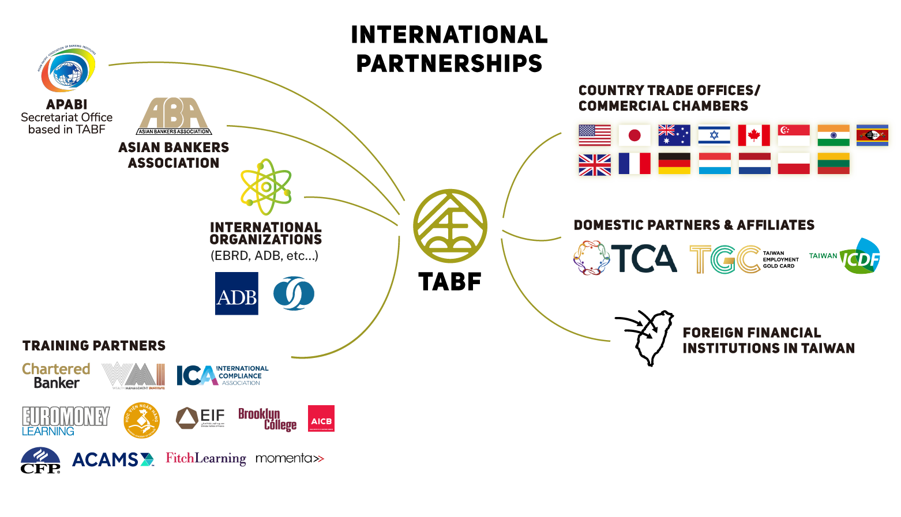
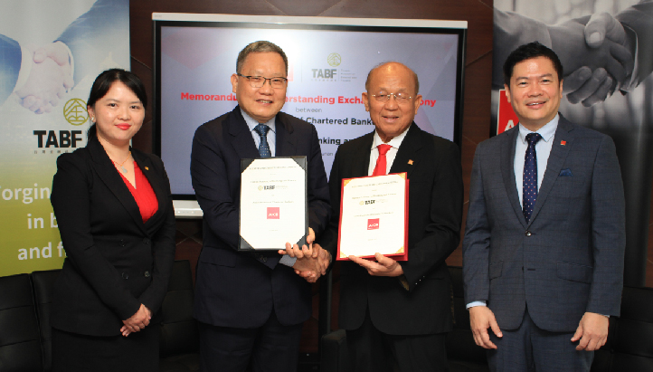
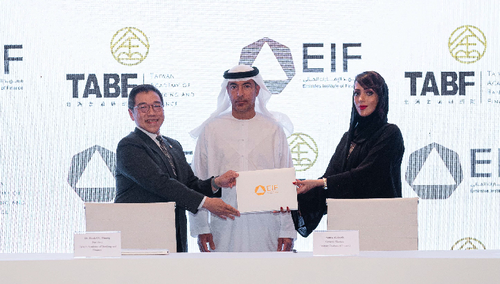
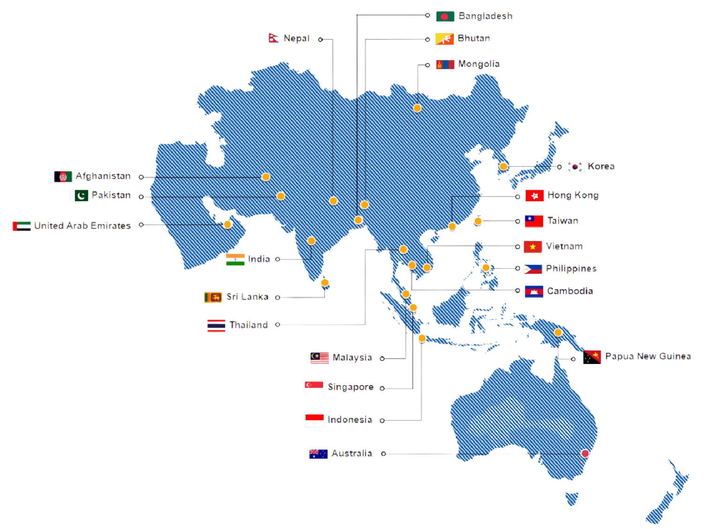
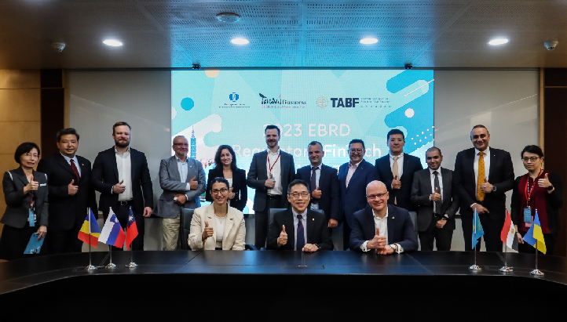
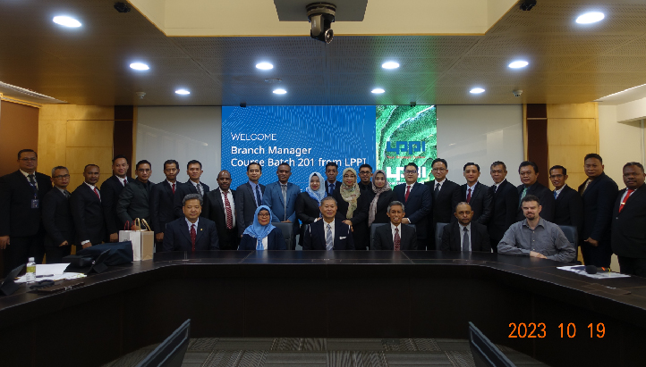
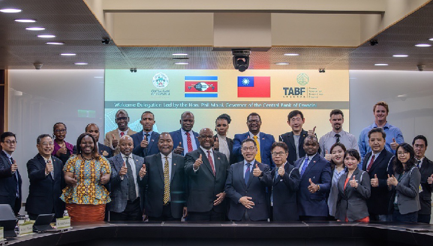
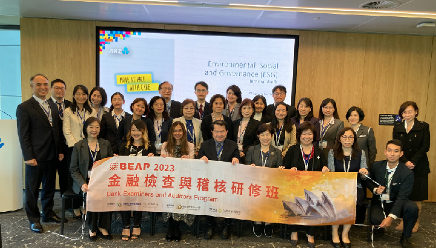
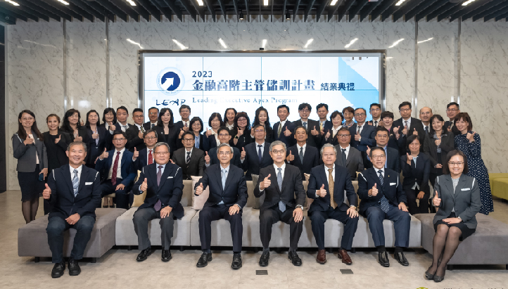
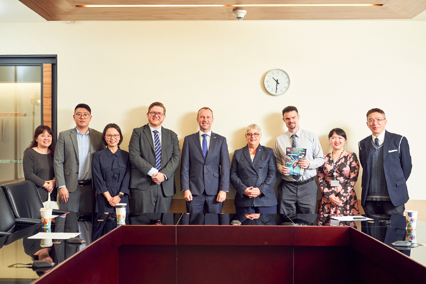

International Cooperation
A bridge fostering links between Taiwan and international finance.
International Partnerships
The Taiwan Academy of Banking and Finance is dedicated to enhancing the global competitiveness of Taiwan's financial industry through active participation international affairs, as well as through nurturing talent with an international outlook. By doing so, we foster cross-national cooperation networks and cultivate global exchange platforms between Taiwan and the broader financial community.
TABF has signed to international collaboration and has signed Memorandums of Understanding (MOUs) with various organizations across Asia and beyond. These partnerships include the Asian Institute of Chartered Bankers (AICB) in Malaysia, the Banking Academy of Vietnam (BAV), the Emirates Institute of Finance (EIF) in the United Arab Emirates, and the Central Bank of Eswatini (CBE), all of which have been formalized through MOUs.

TABF is committed to international collaboration and has signed Memorandums of Understanding (MOUs) with various organizations from different countries. These partnerships include the Asian Institute of Chartered Bankers (AICB) in Malaysia, the Banking Academy of Vietnam (BAV), the Emirates Institute of Finance (EIF) in the United Arab Emirates, and the Central Bank of Eswatini (CBE), all of which have been formalized through MOUs.


APABI Click here to learn more.
The Asian-Pacific Association of Banking Institutes (APABI) is a non-profit association founded in 1986 with 21 members in the Asia-Pacific Region. APABI equips banks and financial institutions to adapt to changing developments in the financial sector.
TABF serves as its Secretariat, coordinating meetings and conferences. APABI holds physical Member Gatherings every two years, fostering relationships among member institutes, and TABF organizes these gatherings.

Joint Training, Forums, and International Exchanges
TABF collaborates with international organizations and institutions to design joint training programs and forums encompassing a variety of topics relevant to banking and finance. Whether in-person or remote, these initiatives unite professionals, experts, practitioners, and academics from around the world to exchange insights and knowledge on diverse topics.

TABF also embraces international visitors, hosting esteemed financial regulators and professionals from EBRD member countries like Slovenia, Kazakhstan, Romania, Egypt, and Ukraine. In addition, it collaborates with the Financial Supervisory Commission (FSC) to organize FinTech Taipei, and has warmly welcomed guests from Indonesia's Banking Development Institute (LPPI) and Dr. Phil Mnisi, Governor of the Central Bank of Eswatini, and his delegation, fostering insightful discussions and exchanges during their visits to Taiwan.


International Field Trips/Visits
TABF leads professionals from the government, industry, and academia on outbound visits, and hosts visiting delegations from around the world, providing them with tailored training courses.


Magazine Article Collaboration
We actively collaborate with international organizations and stakeholders such as country offices in Taipei, overseas banking counterparts, leading businesses in the financial sector, as well as expert practitioners, as interviewees or authors for our prestigious in-house Taiwan Banker magazine.
